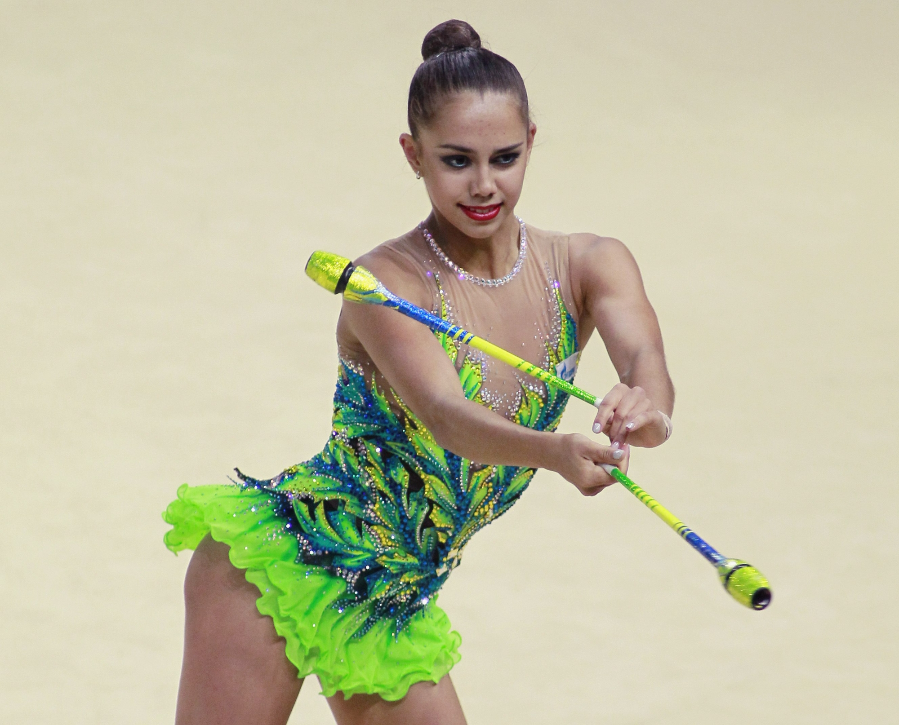
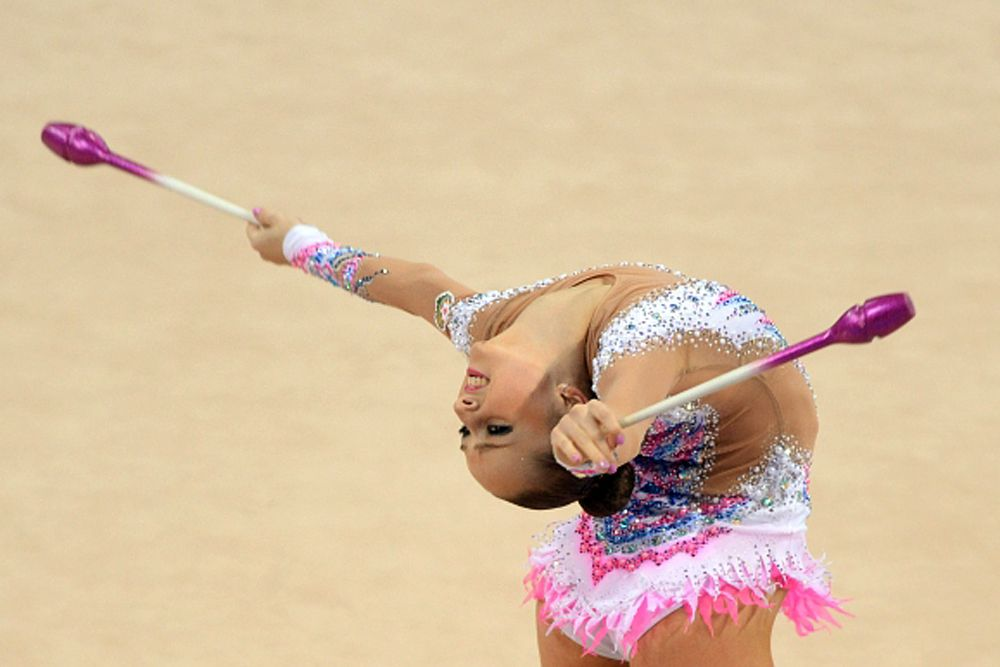
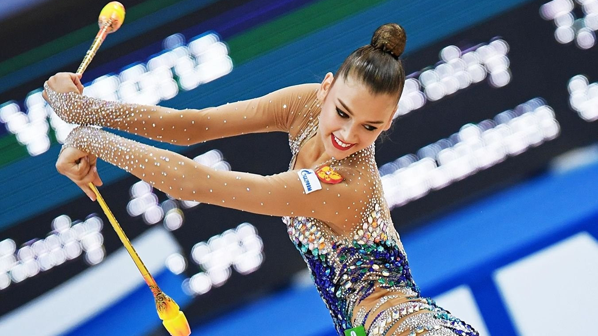

Художественная гимнастика
Булавы
Булавы— предмет в художественной гимнастике.
Разрешаются только выступления с двумя булавами.
В групповых упражнениях у каждой гимнастки может быть только одна пара булав.
В упражнениях с булавами преобладают равновесия.
Основные элементы,
выполняемые булавами — круги (большие и малые), мельницы, жонглирование, вертушки и броски.


